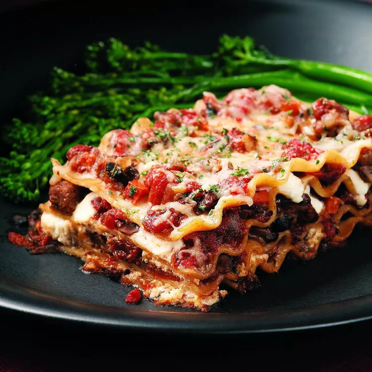

Lasagna
Ingredients
- Meat Sauce
- ½ tablespoon extra-virgin olive oil
- 4 ounces hot or sweet Italian turkey sausage, casings removed
- 2 onions, finely chopped
- 1 carrot, finely chopped
- 12 ounces mushrooms, wiped clean and chopped
- 2 cloves garlic, minced
- ⅛ teaspoon salt
- ¼ cup dry red wine
- Freshly ground pepper, to taste
- 2 28-ounce cans plum tomatoes, drained and chopped
- 1/2 cup sun-dried tomatoes, (not packed in oil), slivered
- 1 teaspoon dried oregano
- 1 teaspoon dried basil
- 1 teaspoon dried thyme
- ¼ teaspoon crushed red pepper, or to taste
- 12 whole-wheat lasagna noodles, (12 ounces)
- 2 cups nonfat ricotta cheese
- ⅛ teaspoon salt
- Freshly ground pepper, to taste
- Ground nutmeg, to taste
- 1 cup shredded part-skim mozzarella
- 1/2 cup freshly grated Parmesan cheese
- 2 tablespoons chopped fresh parsley
Directions
- Step 1: To prepare meat sauce: Heat oil in a large heavy pot or Dutch oven over medium-high heat. Add sausage and cook, breaking up clumps, until browned, 3 to 5 minutes. Reduce heat to medium. Add onions and carrot; cook, stirring, until softened, 2 to 3 minutes. Add mushrooms and garlic; season with salt and pepper. Cook, stirring frequently, until mushroom liquid evaporates, 4 to 6 minutes.
- Step 2: Stir in wine, plum tomatoes, sun-dried tomatoes, oregano, basil, thyme and crushed red pepper. Bring to a simmer; reduce heat to low, cover and simmer, stirring occasionally, for 45 minutes. Uncover and cook, stirring frequently, until the sauce is very thick, 30 to 45 minutes more. Adjust seasoning with salt and pepper.
- Step 3: To prepare filling & assemble lasagna: Bring a large pot of lightly salted water to a boil. Preheat oven to 350 degrees F. Coat a 9-by-13-inch baking dish with cooking spray.
- Step 4: Cook noodles until just tender, about 10 minutes or according to package directions. Drain, then cool by plunging noodles into a large bowl of ice-cold water. Lay the noodles out on kitchen towels.
- Step 5: Season ricotta with salt, pepper and nutmeg. Spread about 1 1/2 cups meat sauce in the prepared pan. Layer 3 noodles on top. Spread another 1 cup sauce over the noodles. Dot about 2/3 cup ricotta over the sauce, then sprinkle with 1/4 cup mozzarella and 2 tablespoons Parmesan. Continue layering the noodles, sauce and cheeses, finishing with the sauce, mozzarella and Parmesan. Sprinkle with parsley; cover with foil.
- Step 6: Bake the lasagna until the sauce is bubbling, 35 to 40 minutes. Uncover and bake until golden, 5 to 10 minutes more. Let cool for 10 minutes before cutting.
Tips
Make Ahead Tip: Prepare through Step 5. Cover and refrigerate for up to 2 days or freeze for up to 3 months. Thaw before baking.
Originally appeared: EatingWell Magazine, September 1998